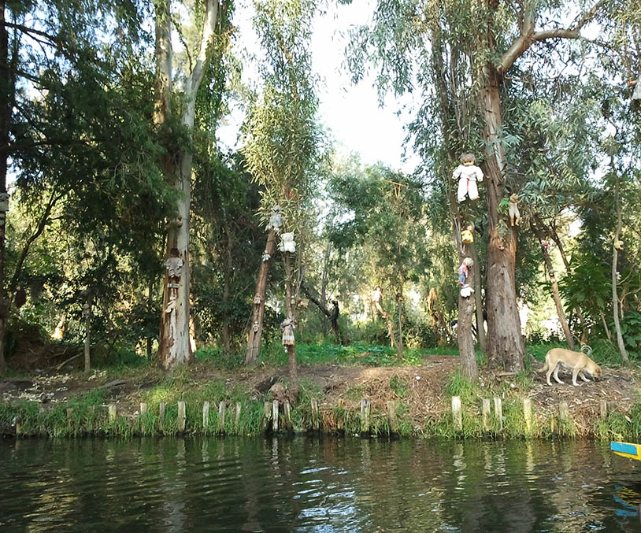
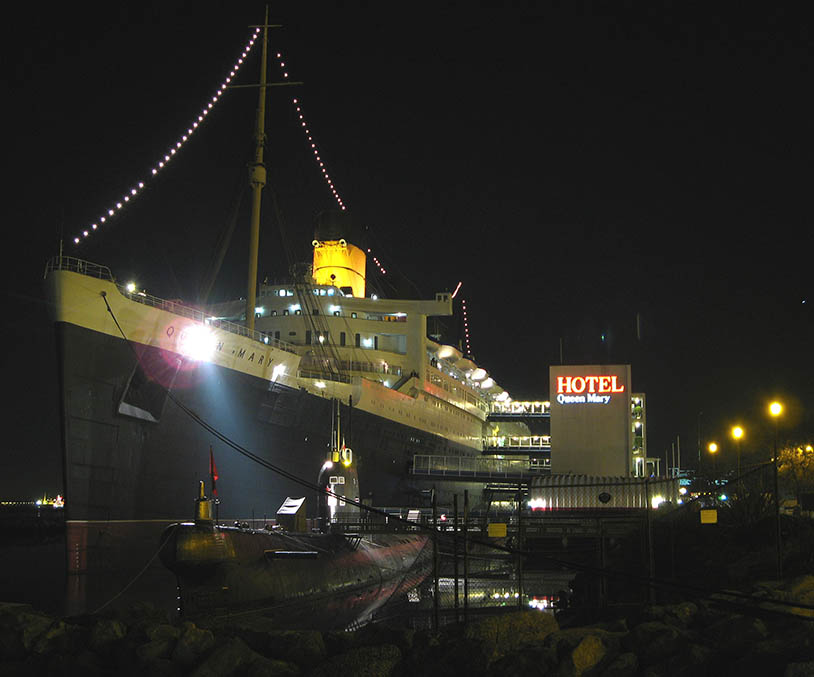

La Isla de Las Muñecas and the Queen Mary are two popular locations for paranormal investigators to travel too. Both of these allegedly haunted places are surrounded by water. There has been both misfortune and death in these wet landscape with a plentiful amount of personal stories that go with it.
Isla de Las Muñecas
The Island of the Dolls (La Isla de las Muñecas) is a chinampa of the Laguna de Tequila located in the channels of Xochimilco, south of the center of Mexico City. It is a popular tourist attraction due to dolls of various styles and colors being found throughout the island. They were originally placed by the former owner of the island, Julián Santana Barrera, who passed from a heart attack in 2001. He believed that dolls helped to chase away the spirit of a girl who drowned years ago.
The dolls are still on the island, which is accessible by boat. The island was featured on the Travel Channel show Ghost Adventures, the Amazon Prime show Lore and was also featured on BuzzFeed Unsolved. Shane Madej, a firm skeptic of the paranormal, has asserted that he believes in the legends about the island. The Island was also used for the episode "Estas son Las Mañanitas" (season one episode 10) of the Spanish TV comedy Nosotros los guapos for Televisa, where the main characters Vítor and Albertano are left behind on the island by an irritated Doña Cuca, and as night falls, they are rescued by the local emergency crews and end up on the news.
The Island of the Dolls is an hour and a half from Embarcadero Cuemanco. The only access is via trajinera. Most rowers are willing to transport people to the island, but there are those who refuse due to superstitions. The journey, approximately one hour, includes a tour of the Ecological Area, the Ajolote Museum, the Apatlaco Canal, the Teshuilo Lagoon and the Llorona Island.
In addition to hundreds of dolls, the island also contains a small museum with articles from local newspapers about both the island and the previous owner. There is a store and three rooms, one of which seems to have been used as a bedroom. In this room you can see the first doll that Santana collected as well as Agustinita, his favorite doll. Some of the visitors place offerings around the dolls in exchange for miracles and blessings and some others change their clothes and maintain it as a form of worship. (source)
RMS Queen Mary
Queen Mary sailed on her maiden voyage on 27 May 1936 and won the Blue Riband that August; she lost the title to SS Normandie in 1937 and recaptured it in 1938, holding it until 1952, when it was taken by the new SS United States. With the outbreak of World War II, she was converted into a troopship and ferried Allied soldiers during the conflict. Following the war, Queen Mary was refitted for passenger service and along with Queen Elizabeth commenced the two-ship transatlantic passenger service for which the two ships were initially built. The two ships dominated the transatlantic passenger transportation market until the dawn of the jet age in the late 1950s. By the mid-1960s, Queen Mary was aging and was operating at a loss.
After several years of decreased profits for Cunard Line, Queen Mary was officially retired from service in 1967. She left Southampton for the last time on 31 October 1967 and sailed to the port of Long Beach, California, United States, where she was permanently moored. The City of Long Beach bought the ship to serve as a tourist attraction featuring restaurants, a museum and a hotel. The city contracted out management of the ship to various third-party firms over the years. It took back operational control in 2021 when the operator filed for bankruptcy and it was found that extensive repairs were needed to keep the ship from sinking.
Following Queen Mary's permanent docking in California, claims were made that the ship was haunted. In 2008, Time magazine included the Queen Mary among its "Top 10 Haunted Places". One of the staterooms is alleged to be haunted by the spirit of a person supposedly murdered there. The Queen Mary Hotel promotes suite room B-340, a former third class cabin, as "notoriously haunted".
One legend is of a little girl who is said to haunt the first and second class pools, but no deaths were recorded in either pool. Another claim made by psychic Peter James is that in 1959, a father murdered his wife and daughters and then killed himself in room B474 and the daughters haunt the room and surrounding corridors. However, Perley's research revealed the room was originally two Second Class cabins before the ship's conversion between 1967-71 and the murder-suicide, while true, never took place on the ship but in Roanoke, Virginia in 1964. Perley dismissed recordings of "disembodied" voices by ghost hunters because of how sound travels on the ship due to being built with thin walls to save weight. (source)